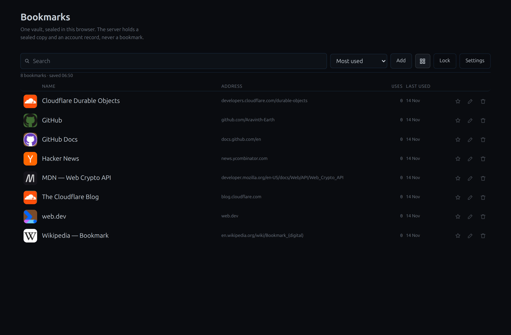
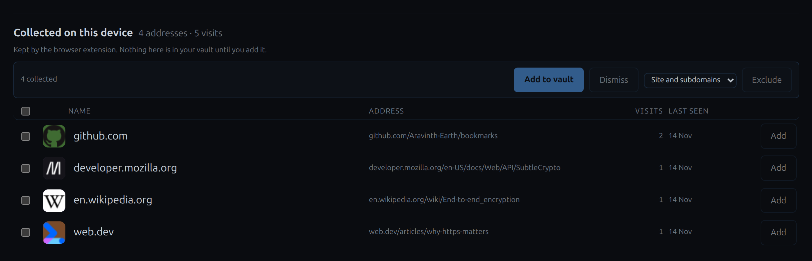

Bookmarks
Your bookmarks, sealed in your browser.
A bookmark vault that lives on your own device. The list is encrypted with a 13-word phrase before anything is stored, so the server holds ciphertext it cannot read — and adding, searching and importing work with no connection at all.
The local vault is free for everyone. Hosted sync is still in development.
How it works
- Create a vault, and keep its 13 words
- Add, edit, search and import — offline
- Turn sync on only if you want the sealed copy on the server
What it looks like


What the server can and cannot do
The phrase is the account. It derives the id the server files the copy under and the key that opens it; only the sealed ciphertext is uploaded, so the server cannot read a single address.
- There is no recovery. Lose the 13 words and the vault cannot be opened by anyone, including whoever runs the server. The only backup is an export you keep.
- No account in the email sense. There is no address to sign up with and no password to reset — the phrase is the whole of the account.
- Nothing else is fetched. No CDN, no web font, no analytics on the app, and no vendor icon service; the page loads only files its own server serves.
The optional browser extension
The vault works exactly as it does without it. Installed, the extension keeps the address of each page this browser opens — only the address, on this device — and lists them under the vault as Collected on this device, where the ones worth keeping can be added.
What it collects stays in the extension's own local storage: it is never in the sealed vault, never synced, and the extension makes no network request. Removing it deletes its list; the vault is untouched either way.